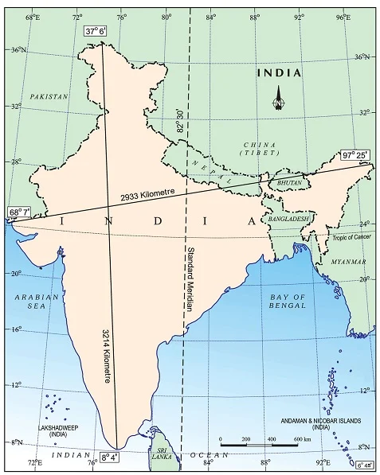
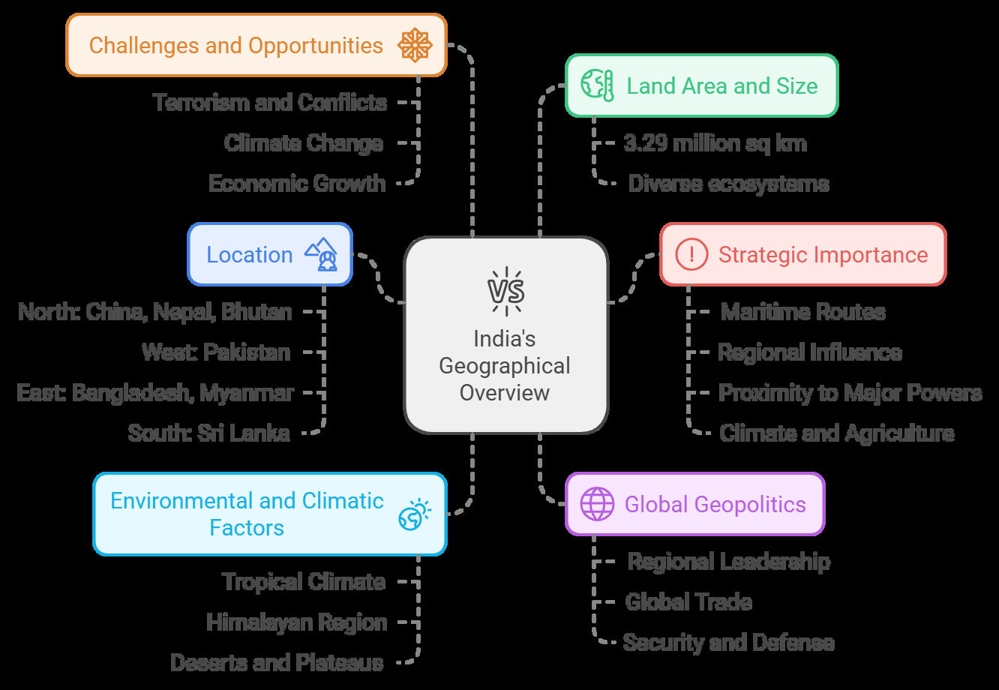
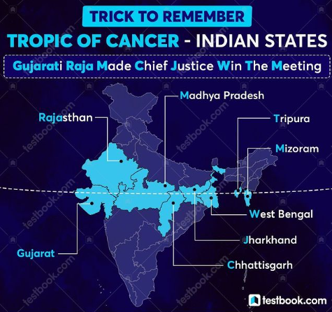
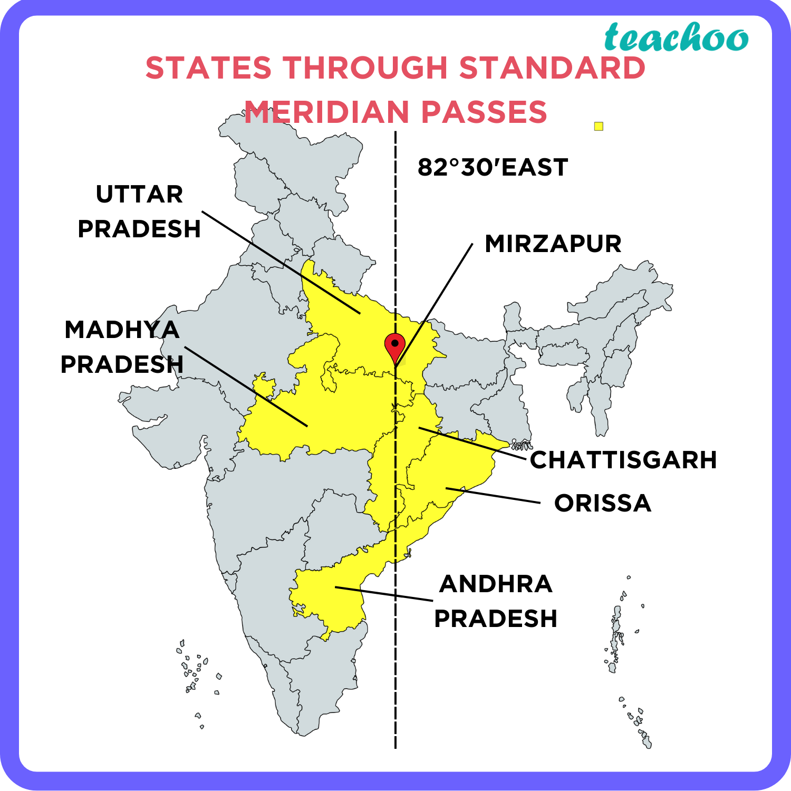

India — Location And Its Size
India Location and Its Size
Introduction
India is a vast and diverse country located in South Asia. It holds significant geopolitical, economic, and cultural importance on both regional and global levels.
The country’s geographical attributes, such as its land area, strategic location, and climate, shape its domestic and international policies.
Understanding the geographical context of India is key to comprehending its political, economic, and environmental dynamics.

Top 10 Countries in Terms of Area:
| Rank | Country | Area (sq km) | Population (approx.) |
|---|---|---|---|
| 1 | Russia | 17,098,242 | 146 million |
| 2 | Canada | 9,984,670 | 38 million |
| 3 | United States | 9,826,675 | 334 million |
| 4 | China | 9,596,961 | 1.41 billion |
| 5 | Brazil | 8,515,767 | 215 million |
| 6 | Australia | 7,692,024 | 26 million |
| 7 | India | 3,287,263 | 1.42 billion |
| 8 | Argentina | 2,780,400 | 46 million |
| 9 | Kazakhstan | 2,724,900 | 19 million |
| 10 | Algeria | 2,381,741 | 45 million |
Size of India
India covers an area of 3.287 million square kilometers, making it the seventh largest country in the world and the largest country in South Asia.
It is larger than the European Union but smaller than Russia, Canada, and China. It is roughly 2.4 times the size of the U.S. state of Alaska.
Dimensions:
Length: From north to south, India stretches over 3,214 km. Width: From east to west, the country spans 2,933 km. Land Border: India shares a land border of approximately 15,200 km with several countries, including China, Pakistan, Nepal, Bhutan, Bangladesh, and Myanmar.
Coastline: The total coastline of India is 7,516.6 km, with two major coastlines: Western Coast (Arabian Sea) Eastern Coast (Bay of Bengal) Union Territories and States: India consists of 28 states and 8 Union Territories.

Location of India
Geographical Coordinates: India is located between 8°4' N and 37°6' N latitudes and 68°7' E and 97°25' E longitudes.
India lies in the southern part of Asia, occupying a prominent position on the Indian Subcontinent.
Northern Border: India shares its northern border with China and Nepal (Himalayan region).
The northernmost point of India is Indira Col (not to be confused with Indira Point).
It is located in the Siachen Glacier region, at the Karakoram Range, in the Ladakh region.
Southern Border: The southernmost point is Indira Point in the Andaman and Nicobar Islands (located just north of the equator).
Western Border: India shares a western border with Pakistan, while the Arabian Sea lies to its west.
Eastern Border: The Bay of Bengal lies to the east, with India sharing borders with Bangladesh, Myanmar, and Bhutan to the northeast.
Maritime Border: India shares its maritime borders with Sri Lanka and Maldives.
| Country | Type of Boundary | Length (in kilometers) |
|---|---|---|
| Afghanistan | Land Border (North-West) | 106 |
| Bhutan | Land Border (North-East) | 699 |
| Sri Lanka | Maritime Boundary (Southern) | 0 (maritime boundary only) |
| Myanmar | Land Border (Eastern) | 1,643 |
| Nepal | Land Border (Northern) | 1,751 |
| Pakistan | Land Border (Western) | 3,323 |
| China | Land Border (Northern) | 3,488 |
| Bangladesh | Land Border (Eastern) | 4,096 |
Strategic Location
Proximity to Important Water Bodies:
India is the central figure in the Indian Ocean region, which has emerged as a critical zone for trade, security, and energy supplies.
India’s location between these seas makes it a crucial maritime power in the region.
Geostrategic Importance:
India's location acts as a bridge between the Middle East and Southeast Asia, providing it with leverage in international diplomacy and trade.
The Strait of Malacca, a key shipping route, is within India’s influence, reinforcing its maritime significance.
Important Latitudes and Longitudes
Tropic of Cancer (23.5° N)
Tropic of Cancer passes through India at 23.5° N latitude. This is a significant latitude as it divides the Earth into the Tropics (between the Tropic of Cancer and Capricorn) and marks the northernmost point where the Sun is directly overhead during the summer solstice (around June 21).
India passes through 8 states, including Gujarat, Rajasthan, Madhya Pradesh, Chhattisgarh, Jharkhand, West Bengal, Mizoram and Tripura.
Ujjain, which lies along the Tropic of Cancer, is a significant religious and cultural city in India, home to the Mahakaleshwar Temple. The northern part of India, especially the Himalayan region, falls under the subtropical zone, which results in a more temperate climate in the northern plains.
States Through Which the Tropic of Cancer Passes:

Significance:
It marks the boundary of the tropical region and has a climatic significance in determining the seasonal changes in India, particularly influencing the Monsoon system.
It also plays a role in the agricultural patterns of the regions it passes through due to the direct sun angle.
Prime Meridian (0° Longitude)
Prime Meridian passes through Greenwich, London, and is the reference for all longitudes. While it does not pass through India directly, its role in geographical coordinates is crucial for understanding India's positioning on the globe.
Indian Context:
India is located east of the Prime Meridian. The standard time for India, known as Indian Standard Time (IST), is based on the time at the 82.5° E longitude, which is 5 hours 30 minutes ahead of GMT (Greenwich Mean Time).
The IST Passes through 5 Indian states namely Uttar Pradesh., Madhya Pradesh, Chhattisgarh, Andhra Pradesh, and Orissa.
This is India’s standard time zone, which places India to the east of the Prime Meridian.
